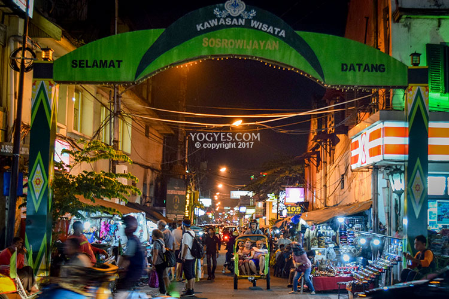
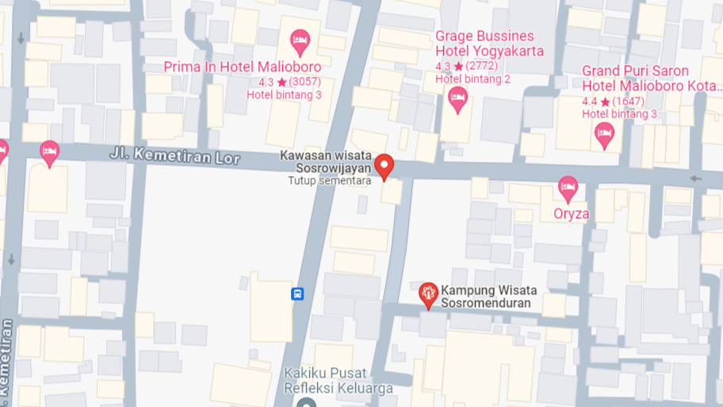

Deskripsi
Berjalan sekitar 200 meter dari Stasiun Tugu, anda akan menemukan kawasan Sosrowijayan yang ditandai oleh sebuah jalan kecil ke arah barat yang bernama sama. Menghubungkan Jalan Jogonegaran dan Jalan Malioboro, Sosrowijayan dibagi menjadi dua daerah, yaitu Sosrowijayan Wetan dan Sosrowijayan Kulon. Daerah Sosrowijayan Wetan-lah yang kemudian dikenal sebagai kampung turis kedua di Yogyakarta setelah Prawirotaman.
Lokasi

Jl. Sosrowijayan No.69, Sosromenduran, Gedong Tengen, Kota Yogyakarta, Daerah Istimewa Yogyakarta 55271
Lihat di MapsRingkasan
Oleh-oleh
Tempat rekreasi
Event Terdekat
-EXPO 2023
-PORSEMATIK 2023
-INPUT 2023
Info Lainnya
Syarat & Ketentuan
Ini adalah informasi tambahan tentang syarat dan ketentuan.
Informasi Tambahan
BLA BLAA BLAAAA